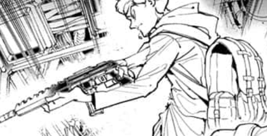

Doing the most reasonable thing and splash it on the ground for no one to have. It shatters into tiny pieces and the green liquid spills to the ground before turning a grayish-black.
"WHAT HAVE YOU DONE?!"
Mother swoops you up, carrying you on her shoulder and dashes away to the exit. Looking in front of you, you see Nicholas comes down carrying a big gun ready for a showdown with the demon. 
"So you've been well brother? How does it feel destroying my future right in front of me? Wasn't it enough, mother kept you instead of me?" the demon says.
"Stop spewing nonsense." Nicholas replies.
Their conversation echoes through the tunnels and you look over to mother's face - she tears up slightly before rubbing it away.
You reach the front of the mansion and mother gives you Nicholas's potion.
"Please bring it to him. You're our only hope now."
Surely she meant that you run faster than her and she'll be right behind you but she heads backwards - towards the mansion again. You watch as her back grows further away from you.
The sun was shining golden today and you stand running to 'father' as fast as possible. Nothing made sense. If what the demon said wasn't true then why, why did mother run back? As if they were the most important things to her?
You reach the brown, oak doors and head straight to the forbidden area. Through the big glass mirrors, the sun starts waving its goodbye. You turn the doorknob and finally see him.
The room was covered in books and he lays still sitting on his bed while looking through the mirror. His face covered by his hair. You approach him slowly, trembling, and he notices your presence. As he looks at your direction, you notice the half-grown horns on his head, yellow gleaming eye and half-demon features.
You give him the potion and he drinks its contents. Looking directly at your eyes, he weakly speaks.
"Thank you..."
To be continued...
There's more choices to select and more truth to be revealed.